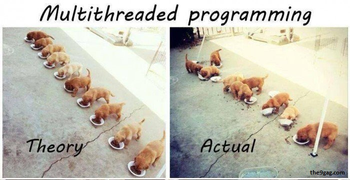
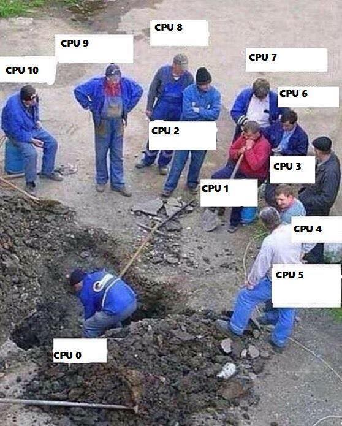

Formación:
- Ingenierío Mecánico - Universidad Nacional de Ingeniería.
Experiencia Laboral:
- Ingeniero de Proyectos en Control System Integration
- Elixirist (Alquimista) ♥
Pueden llamarme Amiguito
Formación:
Experiencia Laboral:
Pueden llamarme Amiguito
Las reglas que rigen la programación diaria típica estan cambiando. Eso no sucede a menudo. Cuando lo hace, algo importante esta pasando.


list = [1, 2, 3, 4] list.pop # => 4 list.push(1) # => [1, 2, 3, 1] puts list.inspect # => [1, 2, 3, 1]
¿Qué podría pasar si, en medio de una operación, el valor cambia debido a otro proceso?
Es difícil de predecir. La programación funcional ofrece una mejor alternativa

iexiex> 10 10 #Integer Type iex> "Holi Woli" "Holi Woli" #String Type
Literals son valores que los humanos podemos entender facilmente.
Types.
Si, la siguiente tabla muestra los types más comunes
| Type | Usado para | Ejemplos |
|---|---|---|
| string | Textos | "Hello World", "Holi Woli" |
| integer | Numeros Enteros | 42, 100, 1000, -34 |
| float | Numeros Reales | 10.8e10, 0.7654, -1.32 |
| boolean | Expresiones Logicas | true, false |
| atom | Identificadores | :ok, :error, :exit |
| tuple | Colección de tamaño conocido | {:ok, 1.32}, {:metros, 50}, {1,2,3} |
| list | Colección de tamaño desconocido | [1,2,3,4], ["juanito, pepito"] |
| map | Buscar un valor dentro de un diccionario mediante un key | %{nombre: "Albert", apellidos: "Castellano Moreno", alias: "Amiguito"} |
| nil | Representa ausencia de calor | nil |
Elixir puede ejecutar y generar un resultado de expresiones.
iex> 42 42 iex> 1+1 2 iex> (2+2)*3 12 iex> 2+2*3
Cuando usamos diferentes operadores, ellos tienen un orden en el cual seran ejecutados, esto se llama precedencia1.
iex> "Hello World!" + 5 (ArithmeticError) bad argument in arithmetic expression ...... iex> 37 + 3.7 40.7
La ultima expresión no resulta en error debido a que la suma se da entre valores con el type number que consiste en la union de integer y float
| Operador | Usado para | Ejemplos |
|---|---|---|
| + | Sumar numeros | 10 + 5, 3.7 + 8.1 |
| - | Restar numeros | 10 - 25, 9.7 - 8.1 |
| * | Multiplicar numero | 10 * 2, 1.5*3 |
| == | 2 valores son iguales? | 1 == 1.0, 1==2 |
| != | 2 valores son diferentes= | 1 != 0, 1 != 2 |
| < | Lado izquiero es menor que el derecho? | 1 < 2, 2 < 1 |
| > | Lado izquierdo es mayor al derecho? | 1 > 2, 2 > 1 |
| ++ | Concatenar 2 listas | [1,2] ++ [3,4] |
| <> | Concatenar 2 strings | "Holi" <> "Woli" |
iex> nombre = "Albert" "Albert" iex> edad = 25 25
Las variables pueden reenlazarse.
Ejemplo:
iex> nombre = "Albert" "Albert" iex> nombre = "Amiguito" "Amiguito"
El operador match es en realidad una afirmación que nosotros hacemos y que elixir tratara de hacer verdad enlazando valores a las variables que participen.
Ejemplo:
iex> {nombre, edad} = {"Albert", 25}
{"Albert", 25}
iex> nombre
"Albert"
iex> edad
25
Variables solo pueden enlazar una vez por match.
Ejemplo:
#Contrajemplo
iex> {edad, edad} = {24, 25}
(MatchError) no match of right hand side value: {24, 25}
Usamos _ para ignorar elementos en un match.
Ejemplo:
iex> {nombre, _} = {"Albert", 25}
{"Albert", 25}
iex> nombre
"Albert"
#Tambien puedo usar la siguiente forma solo por un tema de doocumentación
iex> {nombre, _edad} = {"Albert", 25}
{"Albert", 25}
iex> edad
warning: ...........
Parte del contenido del patron puede contener información que debera ser matcheada en el lado de la data.
Ejemplo:
iex> {"Albert", edad} = {"Albert", 25}
{"Albert", 25}
iex> edad
25
iex> {"Amiguito", edad} = {"Albert", 25}
(MatchError) no match of right hand side value:
Usamos ^ cuando queremos usar el valor de las variables en el lado del patron.
Ejemplo:
iex> nombre = "Albert"
"Albert"
iex> {^nombre, edad} = {"Albert", 25}
{"Albert", 25}
iex> edad
25
Todos los tipos de datos vistos hasta hora pueden ser matcheados.
Ejemplo:
#Mapas
iex> %{nombre: nombre, edad: edad} = %{nombre: "Albert", edad: 25}
#Estructuras
iex> {nombre: nombre} = %{nombre: "Albert", edad: 25}
{"Albert", 25}
#Binarios
iex> "Holi " <> palabra = "Holi Woli"
"Hola Mundo"
iex> palabra
mundo
Gracias ˊ・ω・ˋ